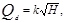
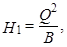
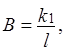
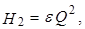
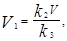
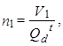

СТРОИТЕЛЬНЫЕ НОРМЫ И ПРАВИЛА
ПОЖАРНАЯ
АВТОМАТИКА
ЗДАНИЙ И СООРУЖЕНИЙ
СНиП 2.04.09-84
ГОССТРОЙ СССР
МОСКВА 1988
РАЗРАБОТАНЫ Специальным проектно-конструкторским бюро «Спецавтоматика» Минприбора (В. Д. Смирнов - руководитель темы, Л. А. Мозгова, В. Н. Дуно, Л. И. Портнова, разд. 1-3), Государственным проектным институтом «Спецавтоматика» Минприбора (Г. И. Сергеева - руководитель темы, разд. 4), Всесоюзным научно-исследовательским институтом противопожарной обороны МВД СССР (д-р техн. наук А. Н. Баратов - руководитель темы, Х. Х. Салахутдинов, кандидаты техн. наук Л. К. Тубашов, С. С. Пустынников).
ВНЕСЕНЫ Минприбором.
ПОДГОТОВЛЕНЫ К УТВЕРЖДЕНИЮ Главтехнормированием Госстроя СССР (Г. П. Кршеминский).
С введением в действие СНиП 2.04.09-84 «Пожарная автоматика зданий и сооружений» утрачивает силу «Инструкция по проектированию установок автоматического пожаротушения» (СН 75-76).
При пользовании нормативным документом следует учитывать утвержденные изменения строительных норм и правил и государственных стандартов, публикуемые в журнале «Бюллетень строительной техники» Госстроя СССР и информационном указателе «Государственные стандарты СССР» Госстандарта СССР.
|
Госстрой СССР |
Строительные нормы и правила |
СНиП 2.04.09-84 |
|
Пожарная
автоматика |
Взамен СН 75-76 |
Настоящие нормы распространяются на проектирование автоматических установок пожаротушения и пожарной сигнализации, а также неавтоматических дренчерных и газовых установок пожаротушения и ручных пожарных извещателей для зданий и сооружений различного назначения, в том числе возводимых в районах с особыми климатическими и природными условиями.
Настоящие нормы не распространяются на проектирование автоматических установок пожаротушения и пожарной сигнализации:
зданий и сооружений, проектируемых по специальным нормам;
технологических установок, расположенных вне зданий;
зданий складов с передвижными стеллажами;
зданий складов для хранения продукции в аэрозольной упаковке;
зданий складов лаков, красок, смол, ЛВЖ, ГЖ с высотой складирования грузов более 5,5 м;
зданий складов с высотой складирования грузов более 16 м;
зданий складов высотой более 10 м с высотой складирования грузов до 5,5 м.
Термины и определения приведены в обязательном приложении 1.
1.1. Автоматические установки пожаротушения, за исключением спринклерных, должны иметь дистанционное и местное включение.
1.2. Автоматические установки пожаротушения должны выполнять одновременно и функции автоматической пожарной сигнализации.
1.3. Автоматические установки пожаротушения следует проектировать с учетом строительных особенностей защищаемых зданий и помещений, возможностей и условий применения огнетушащих веществ исходя из характера технологического процесса производства и технико-экономических показателей.
1.4. Тип установки и огнетушащее вещество необходимо выбирать с учетом пожарной опасности и физико-химических свойств производимых, хранимых и применяемых веществ и материалов.
1.5. Параметры автоматических установок пожаротушения следует выбирать в зависимости от групп помещений, приведенных в обязательном приложении 2.
|
Внесены
|
Утверждены
|
Срок
|
1.6. Автоматические пожарные извещатели следует выбирать с учетом требований рекомендуемого приложения 3.
1.7. Требования к помещениям и оборудованию складов с высотным стеллажным хранением приведены в обязательном приложении 4.
1.8. Автоматические установки газового пожаротушения следует проектировать в соответствии с нормами Государственной противопожарной службы МВД России НПБ 22-96 «Установки газового пожаротушения автоматические. Нормы и правила проектирования и применения».
Пункт 1.8 внесен дополнительно. Изм. № 1.
2.1. Параметры установок пожаротушения следует определять по табл. 1, 2 и 3.
Таблица 1
|
Интенсивность орошения, л/(с · м2), не менее |
Площадь, защищаемая одним спринклерным оросителем или легкоплавким замком, м2 |
Площадь для расчета расхода воды, раствора пенообразователя, м2 |
Продолжительность работы установок водяного пожаротушения, мин |
Расстояние между спринклерными оросителями или легкоплавкими замками, м |
||
|
водой |
раствором пенообразователя |
|||||
|
1 |
0,08 |
- |
12 |
120 |
30 |
4 |
|
2 |
0,12 |
0,08 |
12 |
240 |
60 |
4 |
|
3 |
0,24 |
0,12 |
12 |
240 |
60 |
4 |
|
4 |
0,3 |
0,15 |
12 |
360 |
60 |
4 |
|
5 |
По табл. 2 |
9 |
180 |
60 |
3 |
|
|
6 |
То же |
9 |
180 |
60 |
3 |
|
|
7 |
» |
9 |
180 |
- |
3 |
|
Примечания: 1. Группы помещений приведены в обязательном приложении 2.
2. При оборудовании помещений дренчерными установками площадь для расчета расхода воды, раствора пенообразователя и количество одновременно работающих секций следует определять в зависимости от технологических требований.
3. Площадь, защищаемая одним спринклерным настенным оросителем, составляет 16 м2.
4. Для спринклерных установок значения интенсивности орошения и площади для расчета расхода воды и раствора пенообразователя приведены для помещений высотой до 10 м, а также для фонарных помещений при суммарной площади фонарей не более 10 % площади. Высоту фонарного помещения при площади фонарей более 10 % следует принимать до покрытия фонаря. Указанные параметры установок для помещений высотой от 10 до 20 м следует принимать по табл. 3.
Таблица 2
|
Группа помещений |
||||||
|
5 |
6 |
7 |
||||
|
Интенсивность орошения, л/(с · м2), не менее |
||||||
|
водой |
раствором пенообразователя |
водой |
раствором пенообразователя |
водой |
раствором пенообразователя |
|
|
До 1 |
0,08 |
0,04 |
0,16 |
0,08 |
- |
0,1 |
|
Св. 1 до 2 |
0,16 |
0,08 |
0,32 |
0,2 |
- |
0,2 |
|
» 2 » 3 |
0,24 |
0,12 |
0,4 |
0,24 |
- |
0,3 |
|
» 3 » 4 |
0,32 |
0,16 |
0,4 |
0,32 |
- |
0,4 |
|
» 4 » 5,5 |
0,4 |
0,32 |
- |
0,4 |
- |
0,4 |
|
Примечание. Группы помещений приведены в обязательном приложении 2. |
||||||
Таблица 3
|
Группа помещений |
|||||||||||
|
1 |
2 |
3 |
4 |
1 |
2 |
3 |
4 |
||||
|
Интенсивность орошения, л/ (с · м2), не менее |
Площадь для расчета расхода воды, раствора пенообразователя, м2 |
||||||||||
|
водой |
водой |
раствором пенообразователя |
водой |
раствором пенообразователя |
водой |
раствором пенообразователя |
|||||
|
От 10 до 12 |
0,09 |
0,13 |
0,09 |
0,26 |
0,13 |
0,33 |
0,17 |
132 |
264 |
264 |
396 |
|
Св. 12 » 14 |
0,1 |
0,14 |
0,1 |
0,29 |
0,14 |
0,36 |
0,18 |
144 |
288 |
288 |
432 |
|
» 14 » 16 |
0,11 |
0,16 |
0,11 |
0,31 |
0,16 |
0,39 |
0,2 |
156 |
312 |
312 |
460 |
|
» 16 » 18 |
0,12 |
0,17 |
0,12 |
0,34 |
0,17 |
0,42 |
0,21 |
166 |
336 |
336 |
504 |
|
» 18 » 20 |
0,13 |
0,18 |
0,13 |
0,36 |
0,18 |
0,45 |
0,23 |
180 |
360 |
360 |
540 |
|
Примечание. Группы помещений приведены в обязательном приложении 2. |
|||||||||||
2.2. Установки водяного, пенного, а также водяного пожаротушения со смачивателем подразделяются на спринклерные и дренчерные.
Параметры установок водяного пожаротушения со смачивателем следует определять аналогично параметрам установок водяного пожаротушения.
2.3. При устройстве в зданиях и сооружениях автоматических водяных и пенных установок пожаротушения при технико-экономическом обосновании допускается предусматривать установки пожаротушения в помещениях, где по нормам требуется устройство только автоматической пожарной сигнализации. В этом случав интенсивность орошения следует принимать нормативной, а расход огнетушащего вещества не должен быть диктующим.
2.4. Для помещений, в которых имеются установки с открытыми неизолированными токоведущими частями, находящимися под напряжением, при водяном и пенном пожаротушении следует предусматривать автоматическое отключение электроэнергии до момента подачи огнетушащего вещества на очаг пожара.
2.5. Для каждой секции установки пожаротушения следует предусматривать отдельный узел управления.
2.6. При устройства установок пожаротушения в помещениях, имеющих технологические площадки, оборудование и горизонтально или наклонно установленные вентиляционные короба круглого или прямоугольного сечения шириной или диаметром свыше 0,75 м, расположенные на высоте не менее 0,7 м от плоскости пола, следует дополнительно устанавливать спринклерные или дренчерные оросители, а также побудительную систему под площадки, оборудование и короба.
2.7. Спринклерные установки водяного пожаротушения в зависимости от температуры воздуха в помещениях следует проектировать:
водозаполненными - для помещений с минимальной температурой воздуха 5 °С и выше;
воздушными - для неотапливаемых помещений зданий, расположенных в районах с продолжительностью периода со среднесуточной температурой воздуха, равной и ниже 8 °С более 240 дней в году;
водовоздушными - для неотапливаемых помещений зданий, расположенных в районах с продолжительностью периода со среднесуточной температурой воздуха, равной и ниже 8 °С 240 и менее дней в году.
2.8. Спринклерные установки пенного пожаротушения следует проектировать для помещений с минимальной температурой воздуха не менее 5 °С.
2.9. Спринклерные установки в складских помещениях с высотным стеллажным хранением следует предусматривать в зоне высотного хранения грузов во внутристеллажном пространстве, под перекрытием (покрытием) и в зоне их приемки, упаковки, отправки.
2.10. Спринклерные установки следует проектировать для помещений высотой не более 20 м, за исключением установок, предназначенных для защиты конструктивных элементов покрытий зданий и сооружений. При этом параметры установок для помещений высотой более 20 м следует принимать по 1-й группе помещений (см. табл. 1).
2.11. Для одной секции спринклерной установки следует принимать не более 800 спринклерных оросителей всех типов, во внутристеллажном пространстве - не более 500 оросителей. При этом общая емкость трубопроводов каждой секции воздушных и водовоздушных установок должна составлять не более 3,0 м3.
2.12. В зданиях с балочными перекрытиями (покрытиями), имеющими нулевой предел распространения огня, с выступающими частями высотой более 0,32 м, а в остальных случаях - более 0,2 м спринклерные оросители следует устанавливать между балками, ребрами плит и другими выступающими элементами перекрытия (покрытия) с учетам обеспечения равномерности орошения пола.
2.13. Расстояние от розетки спринклерного оросителя установки водяного пожаротушения до плоскости перекрытия (покрытия) должно быть от 0,08 до 0,4 м.
Расстояние от нижней плоскости диффузора пенного спринклерного оросителя до плоскости перекрытия (покрытия) должно быть не более 0,5 м.
Расстояние от отражателя спринклерного настенного оросителя до плоскости перекрытия (покрытия) должно быть от 0,07 до 0,15 м.
Во внутристеллажном пространстве спринклерные оросители следует устанавливать под экраном, расстояние от розетки спринклерного оросителя до экрана должно быть от 0,10 до 0,25 м. Расстояние от розетки оросителя до верха хранимых грузов должно быть не менее 0,05 м.
2.14. В зданиях с односкатными и двухскатными покрытиями, имеющими уклон более 1/3, расстояние по горизонтали от спринклерных оросителей до стен и от спринклерных оросителей до конька покрытия должно быть не более 1,5 м - при покрытиях с нулевым пределом распространения огня и не более 0,8 м - в остальных случаях.
2.15. В местах, где имеется опасность механического повреждения, спринклерные оросители должны быть защищены.
2.16. Для подачи воды или воды со смачивателем следует применять оросители типов СВ* (установка розеткой вверх), СП (установка розеткой вниз) и СН.
_____________
* Перечень сокращенных названий приведен в обязательном приложении 5.
Во внутристеллажном пространстве оросители типа СВ должны быть установлены розеткой вниз.
Для подачи раствора пенообразователя и получения пены следует применять оросители типов ОПС, ОПСР.
2.17. Спринклерные оросители водозаполненных установок следует устанавливать розетками вверх или вниз, в воздушных и водовоздушных установках - розетками вверх.
Спринклерные оросители установок водяного пожаротушения необходимо устанавливать перпендикулярно плоскости перекрытия (покрытия), спринклерные оросители установок пенного пожаротушения - диффузором вниз под углом, не превышающим 15° к вертикали.
Спринклерные настенные оросители можно использовать в водозаполненных, воздушных и водовоздушных установках. Отражатель спринклерного настенного оросителя следует располагать параллельно плоскости пола.
Для неотапливаемых складов с высотным стеллажным хранением во внутристеллажном пространстве следует использовать оросители типа СН.
2.18. Спринклерные оросители установок следует устанавливать в помещениях или в оборудовании с максимальной температурой окружающего воздуха, °С:
до 50 - с температурой разрушения теплового замка 72 °С;
от 51 до 70 - с температурой разрушения теплового замка 93 °С;
от 71 до 100 - с температурой разрушения теплового замка 141 °С;
от 101 до 140 - с температурой разрушения теплового замка 182 °С;
от 141 до 200 - с температурой разрушения теплового замка 240 °С.
2.19. В пределах одного защищаемого помещения следует устанавливать спринклерные оросители с выпускным отверстием одного диаметра.
2.20. Расстояние между спринклерными оросителями и стенами (перегородками) с пределом распространения огня менее 40 см не должно превышать половины расстояния между спринклерными оросителями, указанного в табл. 1.
Расстояние между спринклерными оросителями и стенами (перегородками) с ненормируемым пределом распространения огня не должно превышать 1,2 м.
Расстояние между спринклерными оросителями установок водяного пожаротушения, устанавливаемыми под гладкими перекрытиями (покрытиями), должно быть не менее 1,5 м.
2.21. Автоматическое включение дренчерных установок следует осуществлять от побудительной системы с легкоплавкими замками или спринклерными оросителями, от автоматических пожарных извещателей, а также от технологических датчиков.
2.22. Побудительный трубопровод дренчерных установок, заполненный водой или раствором пенообразователя, следует устанавливать на высоте относительно клапана не более 1/4 постоянного напора (в метрах) в трубопроводе, расположенном под узлом управления с клапанами группового действия или типов БКМ, КМ, КЗС.
2.23. Для помчи воды следует применять оросители типов ДВ (установка розеткой вверх), ДП (установка розеткой вниз) и ОЭ.
Для подачи раствора пенообразователя и получения пены следует применять оросители типов ОПД, ОПДР, ОЭ, ГЧС, ГЧСм.
Дренчерные оросители следует устанавливать с учетом их технических характеристик и карт орошения для обеспечения равномерности орошения защищаемой площади.
2.24. Для нескольких дренчерных завес допускается предусматривать один узел управления.
2.25. Расстояние между оросителями дренчерных завес следует определять из расчета расхода воды или раствора пенообразователя 1,0 л/с на 1 м ширины проема.
2.26. Расстояние от легкоплавкого замка побудительной системы до плоскости перекрытия (покрытия) должно быть от 0,08 до 0,4 м.
2.27. Заполнение помещения пеной при объемном пенном пожаротушении следует предусматривать до высоты, превышающей самую высокую точку защищаемого оборудования не менее чем на 1 м.
2.28. Подводящие трубопроводы (наружные и внутренние) необходимо проектировать кольцевыми.
Подводящие трубопроводы, как правило, следует проектировать тупиковыми для трех и менее узлов управления, при этом длина наружного тупикового трубопровода не должна превышать 200 м.
2.29. Кольцевые подводящие трубопроводы (наружные и внутренние) следует разделять на участки разделительными задвижками; число узлов управления на одном участке должно быть не более трех. При расчете трубопроводов на пожаротушение выключение ремонтных участков кольцевых сетей не учитывается, при этом диаметр кольцевого трубопровода должен быть не менее диаметра трубопровода к узлам управления.
2.30. Подводящие трубопроводы (наружные) установок водяного пожаротушения и трубопроводы противопожарного, производственного или хозяйственно-питьевого водопровода должны, как правило, быть общими.
2.31. Присоединение производственного оборудования и санитарных приборов к питающим трубопроводам установок пожаротушения не допускается.
2.32. В помещениях категории В по пожарной опасности на питающих трубопроводах спринклерных установок, кроме воздушных и водовоздушных, диаметром 65 мм и более допускается устанавливать внутренние пожарные краны, оборудованные ручными водяными или пенными пожарными стволами. При этом установка кнопок дистанционного пуска насосов у внутренних пожарных кранов не требуется.
2.33. Секция спринклерной установки с 12 и более пожарными кранами должна иметь два ввода. Для спринклерных установок с двумя секциями и более второй ввод с задвижкой допускается осуществлять от смежной секции. При этом над узлами управления необходимо предусматривать установку задвижки с ручным приводом, а подводящий трубопровод должен быть закольцован и между этими узлами управления - установлена разделительная задвижка.
2.34. На одной ветви распределительного трубопровода установок, как правило, следует устанавливать не более шести оросителей с диаметром выходного отверстия до 12 мм и не более четырех оросителей с диаметром выходного отверстия более 12 мм.
2.35. К питающим и распределительным трубопроводам спринклерных установок допускается присоединять дренчерные завесы для орошения дверных и технологических проемов, а к питающим трубопроводам - дренчеры с побудительной системой включения.
2.35. Диаметр побудительного трубопровода дренчерной установки должен быть не менее 15 мм.
2.37. Трубопроводы следует проектировать из стальных труб по ГОСТ 10704-76 со сварными соединениями.
В помещениях категорий А и Б допускается соединение указанных труб на фланцах, а также применение в этих помещениях труб по ГОСТ 3262-75 на резьбовых соединениях.
2.38. Не допускается установка запарной арматуры на питающих и распределительных трубопроводах, за исключением случаев, предусмотренных пп. 2.32, 2.33 и 2.35.
2.39. Расстояние от трубопровода до строительных конструкций должно быть не менее 0,02 м.
2.40. Питающие и распределительные трубопроводы воздушных и водовоздушных спринклерных установок следует прокладывать с уклоном в сторону узла управления или спускных устройств, равным:
0,01 для труб с наружным диаметрам менее 57 мм;
0,005 для труб с наружным диаметром 57 мм и более.
2.41. Узлы управления установок необходимо размешать в местах с температурой воздуха 5 °С и выше к которым имеется свободный доступ обслуживающего персонала.
Узлы управления следует размещать в помещениях насосных станций, пожарных постов, а также в защищаемых помещениях или вне их. При этом узлы управления, размещаемые в защищаемых помещениях, следует отдалять от этих помещений противопожарными перегородками и перекрытиями с пределом огнестойкости 0,75 ч, узлы управления, размещаемые вне защищаемых помещений, - остекленными или сетчатыми перегородками.
Узлы управления, как правило, необходимо размешать в первых, цокольных и подвальных этажах.
2.42. На вводах или на обводных трубопроводах пожарных насосов повысительных насосных станций следует устанавливать регуляторы давления прямого действия при давлении в сети водопровода свыше 1,0 Мпа.
2.43. Расстановку внутренних пожарных кранов, подсоединяемых к трубопроводам спринклерной установки, следует проектировать согласно СНиП II-30-76.
2.44. Методика расчета установок водяного и пенного пожаротушения приведена в рекомендуемом приложении 6.
2.45. Водопроводы различного назначения следует использовать как источник водоснабжения установок водяного пожаротушения. Источником водоснабжения установок пенного пожаротушения должны служить водопроводы непитьевого назначения, при этом качество воды должно удовлетворять требованиям технических документов на применяемые пенообразователи.
2.46. Запас воды для установок водяного пожаротушения допускается хранить в резервуарах водопроводов различного назначения, где следует предусматривать устройства, не допускающие расхода указанного запаса воды на другие нужды.
Запас воды до 1000 м3 следует хранить в одном резервуаре.
2.47. Для установок пенного пожаротушения необходимо предусматривать на объекте (кроме расчетного) 100 %-ный резервный запас пенообразователя.
2.48. Запас раствора пенообразователя, как правило, следует хранить в двух резервуарах.
2.49. При определении объема резервуара для установок водяного пожаротушения следует учитывать возможность автоматического пополнения резервуаров водой в течение всего времени пожаротушения.
2.50. При определении количества раствора пенообразователя для установок пенного пожаротушения следует дополнительно учитывать емкость трубопроводов установки пожаротушения.
2.51. Максимальный срок восстановления неприкосновенного запаса воды или раствора пенообразователя для установок автоматического пожаротушения следует принимать согласно СНиП 2.04.02-84.
2.52. Для обеспечения расчетного давления в трубопроводах спринклерных установок и подводящих трубопроводах дренчерных установок, необходимо для срабатывания узлов управления, следует предусматривать импульсное устройство - металлический сосуд, заполненный водой или раствором пенообразователя (не менее 0,5 м3) и сжатым воздухом. В спринклерных установках с подсоединенными пожарными кранами для зданий высотой более 30 м количество воды или раствора пенообразователя в импульсном устройстве должно быть не менее 1 м3. В качестве импульсного устройства могут быть использованы водопроводы различного назначения с давлением, равным или более расчетного.
2.53. Все установки с насосом, включаемым вручную, должны иметь автоматический водопитатель, обеспечивающий работу установки с расчетным расходом воды, раствора пенообразователя в течение 10 мин.
2.54. Автоматический водопитатель или импульсное устройство должны автоматически отключаться при включении насосов.
2.55. Число пожарных насосов, а также насосов-дозаторов в насосной станции следует принимать не менее двух (в том числе один резервный).
2.56. Для подачи пенообразователя в резервуар следует предусматривать перфорированный трубопровод, проложенный по периметру резервуара на 0,1 м ниже расчетного уровня воды в нем.
2.57. Насосные станции автоматических установок пожаротушения следует относить к I категории надежности действия.
2.58. Насосные станции следует размещать в отдельном помещении зданий в первых, цокольных и подвальных этажах, они должны иметь отдельный выход наружу или на лестничную клетку, имеющую выход наружу.
Насосные станции допускается размешать в отдельно стоящих зданиях или пристройках.
2.59. Помещение насосной станции должно быть отделено от других помещений противопожарными перегородками и перекрытиями с пределом огнестойкости 0,75 ч.
Температуре воздуха в помещении насосной станции должна быть от 5 до 35 °С, относительная влажность воздуха - не более 80 % при 25 °С.
Рабочее и аварийное освещение следует принимать согласно СНиП II-4-79.
Помещение станции должно быть оборудовано телефонной связью с помещением пожарного поста.
У входа в станцию должно быть световое табло «Станция пожаротушения».
2.60. Размещение оборудования в насосных станциях следует проектировать согласно СНиП II-30-76.
В зданиях высотой более 30 м импульсное устройство следует размешать в верхних технических этажах.
2.61. Корпус насоса, как правило, следует располагать под заливом на 0,5 м от расчетного уровня огнетушащего вещества.
2.62. По степени обеспечения надежности электроснабжения электроприемники установок следует относить к I категории согласно Правилам устройства электроустановок (ПУЭ) Минэнерго СССР, за исключением электродвигателей компрессора, насосов дренажного и подкачки пенообразователя, относящихся к III категории, а также случаев, указанных в пп. 2.64 и 2.65.
2.63. Питание электроприемников следует осуществлять согласно ПУЭ с учетом требований пп. 2.64 и 2.65.
2.64. При наличии одного источника электропитания (на объектах III категории надежности электроснабжения) следует предусматривать привод резервного пожарного насоса от двигателя внутреннего сгорания, включаемого вручную.
В этом случае для запуска двигателя внутреннего сгорания, а также для электропитания устройств сигнализации установки следует предусматривать аккумуляторные батареи.
Емкость аккумуляторной батареи должна обеспечивать помимо расхода на запуск двигателя питание электроприемников устройств сигнализации установок в течение 24 ч в дежурном режиме и не менее 3 ч в режиме «Тревога».
2.65. При невозможности по местным условиям осуществлять питание электроприемников, указанных в п. 2.62, от двух независимых источников допускается, по согласованию с министерством (ведомством) - заказчиком проектно-сметной документации, осуществлять питание их от одного источника: от разных трансформаторов двухтрансформаторной или от двух близлежащих однотрансформаторных подстанций, подключенных к разным питающим линиям, проложенным по разным трассам, с устройством автоматического ввода резерва (АВР), как правило, на стороне низкого напряжения.
2.66. Для электроприемников I категории надежности электроснабжения, имеющих включаемый автоматически технологический резерв (при наличии одного рабочего и одного резервного насосов), устройство АВР не требуется.
2.67. Место размещения устройства АВР - централизованно на вводах установки или децентрализованно у электроприемников I категории надежности электроснабжения - определяется в зависимости от взаиморасположения и условий прокладки питающих линий до удаленных электроприемников.
2.68. В случае питания электроприемников I категории от резервного ввода допускается при необходимости обеспечивать электропитание указанных электроприемников за счет отключения на объекте электроприемников II и III категорий надежности электроснабжения.
2.69. Защиту электрических цепей необходимо выполнять в соответствии с ПУЭ.
Не допускается устройство тепловой и максимальной зашиты в цепях управления, отключение которых может привести к отказу подачи огнетушащего вещества к очагу пожара.
2.70. Электроуправление установок должно обеспечивать:
автоматический пуск рабочих насосов (пожарных и насосов-дозаторов);
автоматический пуск резервных насосов (пожарного и насоса-дозатора) в случае отказа пуска или невыхода рабочего насоса на режим в течение установленного времени;
автоматическое включение запорной арматуры с электроприводом;
автоматический пуск и отключение дренажного насоса;
местное и при необходимости дистанционное управление насосами;
местное управление устройствами компенсации утечки огнетушащего вещества и сжатого воздуха из трубопроводов и гидропневматических емкостей;
автоматическое переключение цепей управления, сигнализации с рабочего ввода электроснабжения на резервный при исчезновении напряжения на рабочем вводе (кроме цепей управления местным пуском насосов и световой сигнализации о наличии напряжения на вводах электропитания);
отключение автоматического пуска насосов;
автоматический контроль исправности электрических цепей электровентилей, приборов, регистрирующих срабатывание узлов управления и формирующих командный импульс на автоматическое включение пожарных насосов, насосов-дозаторов;
автоматический контроль аварийного уровня в резервуаре, в дренажном приямке, в емкости с пенообразователем при раздельном хранении;
контроль исправности звуковой и световой сигнализации (по вызову);
отключение звуковой сигнализации;
формирование командного импульса (устройство потенциальных или беспотенциальных, контактных или бесконтактных элементов на выходах аппаратуры пожаротушения или пожарной сигнализации) для управления технологическим и электротехническим оборудованием объекта, а также системами оповещения о пожаре.
2.71. Формирование командного импульса автоматического пуска установки необходимо осуществлять:
аппаратурой электрической пожарной сигнализации;
сигнализаторами давления;
электроконтактными манометрами;
технологическими датчиками.
2.72. Для формирования командного импульса автоматического пуска установки следует предусматривать два сигнализатора давления или два электроконтактных манометра, или два автоматических пожарных извещателя.
2.73. Формирование командного импульса автоматического пуска насоса-дозатора осуществляется элементами электроуправления, фиксирующими пуск пожарного насоса.
2.74. Устройства местного пуска и остановки насосов следует размещать в насосной станции. Допускается осуществлять пуск и остановку пожарных насосов из помещения пожарного поста.
2.75. Устройство местного пуска и остановки компрессора следует размешать в насосной станции или в помещении узлов управления в зависимости от размещения компрессора.
2.76. Устройства переключения автоматического и дистанционного пуска насосов на местный следует размещать в насосной станции.
2.77- В установках объемного пенного пожаротушения для защищаемых помещений с возможным пребыванием людей следует предусматривать устройства переключения автоматического пуска установки на дистанционный.
2.78. Устройства восстановления режима автоматического пуска установок должны быть размешены в помещении пожарного поста или в другом помещении с персоналом, ведущим круглосуточное дежурство.
2.79. В помещениях, защищаемых установками объемного пенного пожаротушения, и перед входами в них должна предусматриваться сигнализация в соответствии с ГОСТ 12.4.009-83. Смежные помещения, имеющие выход только через защищаемые помещения, должны быть оборудованы аналогичной сигнализацией.
2.80. В помещении насосной станции следует предусматривать световую сигнализацию:
о наличии напряжения на рабочем и резервном вводах электроснабжения (по вызову);
об отключении автоматического пуска пожарных насосов, насосов-дозаторов, дренажного насоса;
о неисправности электрических цепей приборов, регистрирующих срабатывание узлов управления и выдающих командный импульс на включение установки и запорных устройств (по вызову с расшифровкой по направлениям);
о неисправности электрических цепей управления электровентилями (с расшифровкой по направлениям по вызову), допускается выполнение визуальной индикации;
о заклинивании электрозадвижек (по вызову с расшифровкой по направлениям);
об аварийном уровне в пожарном резервуаре, емкости с пенообразователем, в дренажном приямке (общий сигнал).
2.81. В помещении пожарного поста или другом помещении с персоналом, ведущим круглосуточное дежурство, необходимо предусматривать:
а) световую и звуковую сигнализацию:
о возникновении пожара (с расшифровкой по направлениям);
о пуске насосов;
о начале работы установки с указанием направления, по которому подается огнетушащее вещество, или помещений (с расшифровкой по направлениям);
об отключении автоматического пуска насосов;
о неисправности установки, исчезновении напряжения на вводах электроснабжения, о падении давления в гидропневматической емкости, неисправности цепей электропитания аппаратуры пожарной сигнализации (при отсутствии указанной сигнализации на аппаратуре пожарной сигнализации), о заклинивании электрозадвижек, неисправности цепей электроуправления запорных устройств (общий сигнал);
об аварийном уровне воды, раствора пенообразователя, пенообразователя в резервуаре или емкости, дренажном приямке (общий сигнал);
б) световую сигнализацию:
о наличии напряжения на вводах электроснабжения, подведенных к оборудованию установки, размещаемому в помещении пожарного поста или другом помещении с персоналом, ведущим круглосуточное дежурство;
об отключении звуковой сигнализации о пожаре (при отсутствии автоматического восстановления сигнализации);
об отключении звуковой сигнализации о повреждении (при отсутствии автоматического восстановления);
о положении электрозадвижек (открыты).
2.82. Звуковые сигналы о пожаре, запуске пожарных насосов и срабатывании установки должны отличаться тональностью (ревуны, сирены) от звуковых сигналов о неисправности (звонки).
2.83. Помещение пожарного поста или другое помещение с персоналом, ведущим круглосуточное дежурство, должно соответствовать требованиям, указанным в разд. 4.
Указанные помещения должны быть оборудованы телефонной связью с помещением станции пожаротушения и с пожарной охраной.
2.84. Нормы и требования к освещению мест установки узлов управления следует принимать в соответствии с требованиями п. 2.59.
2.85. Защитное заземление и зануление электрооборудования должно соответствовать ПУЭ и СН 102-76.
2.86. Выбор проводов и кабелей, а также способ их прокладки следует выполнять согласно техническим характеристикам кабельно-проводниковой продукции в соответствии с ПУЭ, СНиП III-33-76*, СНиП III-34-74, СН 85-74, СН 543-82 с учетом требований разд. 4.
2.87. Прокладку взаиморезервирующих кабельных линий, питающих электроэнергией установку, следует проектировать согласно требованиям п. 4.46.
2.88. Устройства дистанционного пуска установки должны быть защищены и размешены в соответствии с ГОСТ 12.4.009-83.
3. УСТАНОВКИ ГАЗОВОГО ПОЖАРОТУШЕНИЯ
Раздел 3 Исключен. Изм. № 1.
4.1. Количество автоматических пожарных извещателей определяется необходимостью обнаружения загораний по всей контролируемой площади помещений (зон), а для световых извещателей - и оборудования.
Если установка пожарной сигнализации предназначена для управления автоматическими установками пожаротушения, дымоудаления и оповещения о пожаре, каждую точку защищаемой поверхности необходимо контролировать не менее чем двумя автоматическими пожарными извещателями.
4.2. Максимальное расстояние между дублирующими дымовыми или тепловыми пожарными извещателями должно быть равно половине нормативного, определенного по табл. 4 и 5, если установка пожарной сигнализации предназначена для управления автоматическими установками пожаротушения, дымоудаления и оповещения о пожаре.
4.3. Дымовые и тепловые пожарные извещатели следует устанавливать, как правило, на потолке.
При невозможности установки извещателей на потолке допускается установка их на стенах, балках, колоннах. Допускается также подвеска извещателей на тросах под покрытиями зданий со световыми, аэрационными, зенитными фонарями. В этих случаях извещатели необходимо размещать на расстоянии не более 300 мм от потолка, включая габариты извещателя.
4.4. Дымовые и тепловые пожарные извещатели следует устанавливать в каждом отсеке потолка. ограниченном строительными конструкциями (балками, прогонами, ребрами плит и т.п.), выступающими от потолка на 0,4 м и более.
При наличии на потолке выступающих частей от 0,08 до 0,4 м контролируемая площадь уменьшается на 25 %.
При наличии в контролируемом помещении коробов, технологических площадок шириной 0,75 м, имеющих сплошную конструкцию и отстоящих по нижней отметке от потолка на расстоянии более 0,4 м, под ними необходимо дополнительно устанавливать пожарные извещатели.
4.5. Автоматические пожарные извещатели следует устанавливать в каждом отсеке помещения, образованном штабелями материалов, стеллажами, оборудованием и строительными конструкциями, верхние края которых выступают от потолка на 0,6 м и менее.
4.6. Автоматические пожарные извещатели необходимо применять в соответствии с требованиями технических условии, стандартов и паспортов, с учетом условий среды контролируемых помещений.
4.7. Автоматические пожарные извещатели одного шлейфа пожарной сигнализации должны контролировать не более пяти смежных или изолированных помещений, расположенных на одном этаже и имеющих выходы в общий коридор (помещение).
Автоматическими пожарными извещателями одного шлейфа пожарной сигнализации допускается контролировать в общественных, жилых и вспомогательных зданиях до десяти, а при выносной световой сигнализации от автоматических пожарных извещателей и установке ее над входом в контролируемое помещение - до двадцати смежных или изолированных помещений, расположенных на одном этаже и имеющих выходы в общий коридор (помещение).
4.8. Количество автоматических пожарных извещателей, включаемых в один шлейф пожарной сигнализации, следует определять технической характеристикой станции пожарной сигнализации.
4.9. В одном помещении следует устанавливать не менее двух автоматических пожарных извещателей.
4.10. Площадь, контролируемая одним дымовым пожарным извещателем, а также максимальное расстояние между извещателями и извещателем и стеной необходимо определять по табл. 4, но не превышая величин, указанных в технических условиях и паспортах на извещатели.
4.11. В помещениях шириной до 3 м расстояние между извещателями допускается увеличить до 15 м.
Таблица 4
|
Площадь, контролируемая одним извещателем, м2 |
Максимальное расстояние, м |
||
|
между извещателями |
от извещателя до стены |
||
|
До 3,5 |
До 85 |
9,0 |
4,5 |
|
Св. 3,5 до 6,0 |
» 70 |
8,5 |
4,0 |
|
» 6,0 » 10,0 |
» 65 |
8,0 |
4,0 |
|
» 10,0 » 12,0 |
» 55 |
7,5 |
3,5 |
4.12. Площадь, контролируемая одним тепловым пожарным извещателем, а также максимальное расстояние между извещателями и извещателем и стеной необходимо определять по табл. 5. но не превышая величин, указанных в технических условиях и паспортах на извещатели.
Таблица 5
|
Площадь, контролируемая одним извещателем, м |
Максимальное расстояние, м |
||
|
между извещателями |
от извещателя до стены |
||
|
До 3,5 |
До 25 |
5,0 |
2,5 |
|
Св. 3,5 до 6,0 |
« 20 |
4,5 |
2,0 |
|
« 6,0 « 9,0 |
« 15 |
4,0 |
2,0 |
4.13. Температура срабатывания максимальных и максимально дифференциальных извещателей должна быть не менее чем на 20 °С выше максимальной допустимой температуры в помещении.
4.14. Световые пожарные извещатели следует устанавливать в помещениях на потолке, стенах и других строительных конструкциях зданий и помещений, а также на оборудовании. Каждую точку защищаемой поверхности необходимо контролировать не менее чем двумя автоматическими пожарными извещателями.
4.15. Ручные извещатели следует устанавливать для подачи сигнала о пожаре в установках пожарной сигнализации.
4.16. Извещатели устанавливаются как внутри, так и вне зданий на стенах и конструкциях на высоте 1,5 м от уровня пола или земли.
4.17. Внутри зданий извещатели следует устанавливать на путях эвакуации (в коридорах, проходах, лестничных клетках и т.д.) и при необходимости - в отдельных помещениях. Расстояние между извещателями должно быть не более 50 м. Извещатели устанавливаются по одному на всех лестничных площадках каждого этажа.
4.18. Вне зданий извещатели следует устанавливать на расстоянии не более 150 м один от другого и должны иметь указательные знаки согласно ГОСТ 12.4.026-76.
Места установки ручных пожарных извещателей должны иметь искусственное освещение.
4.19. Извещатели следует включать в самостоятельный шлейф пожарной сигнализации или совместно с автоматическими пожарными извещателями.
4.20. Резерв емкости станций пожарной сигнализации и концентраторов должен быть не менее 10 %.
4.21. Применение приемно-контрольных приборов и концентраторов, не обеспечивающих разделения сигналов о пожаре и о неисправностях. допускается при включении в них не более десяти шлейфов пожарной сигнализации, если отсутствует управление технологическим, электротехническим и другим оборудованием, а также автоматическими установками пожаротушения, дымоудаления и оповещения о пожаре.
4.22. Станции пожарной сигнализации, концентраторы, приемно-контрольные приборы следует устанавливать в помещении, где находится персонал, ведущий круглосуточное дежурство.
4.23. В обоснованных случаях допускается установка приемно-контрольных приборов в помещениях без персонала, ведущего круглосуточное дежурство. при обеспечении передачи извещений о пожаре и о неисправности в помещение пожарного поста или другое помещение с персоналом. ведущим круглосуточное дежурство, и обеспечении контроля каналов связи.
4.24. В помещениях без персонала, ведущего круглосуточное дежурство, следует предусмотреть меры, предотвращающие доступ посторонних лиц к приемно-контрольным приборам, и охранно-пожарную сигнализацию.
4.25. Станции пожарной сигнализации, концентраторы, приемно-контрольные приборы и аппараты управления необходимо устанавливать в невзрывоопасных и непожароопасных помещениях на стенах, перегородках и конструкциях с нулевым пределом распространения огня.
Установка указанного оборудования допускается на конструкциях из сгораемых материалов при условии защиты этих конструкций металлическим листом толщиной не менее 1 мм или другим листовым несгораемым материалом толщиной не менее 10 мм. При этом листовой материал должен выступать за контуры установленного на нем оборудования не менее чем на 100 мм.
Расстояние между приемно-контрольными приборами и потолком из сгораемых материалов должно быть не менее 1,0 м.
4.26. При смежном расположении нескольких станции пожарной сигнализации и приемно-контрольных приборов расстояние между ними должно быть не менее 50 мм.
4.27. Оборудование и аппараты управления, устанавливаемые на стене или стойке, следует размещать на высоте 0,8-1,8 м от пола.
4.28. Помещение пожарного поста должно иметь площадь не менее 15 м2, расположено на первом или цокольном этаже здания, иметь выход непосредственно наружу. Температура воздуха в помещении пожарного поста должна быть от 18 до 25 °С, относительная влажность воздуха - не более 80 %.
4.29. Помещение пожарного поста или помещение с персоналом, ведущим круглосуточное дежурство, в котором размещается аппаратура пожарной сигнализации, должны иметь естественное освещение, а также искусственное освещение не менее 150 лк дли люминесцентных ламп и не менее 100 лк - для ламп накаливания. Кроме рабочего освещения предусматривается аварийное освещение, которое должно обеспечивать освещенность на рабочих поверхностях не менее 10 % соответствующих норм рабочего освещения. Питание сети аварийного освещения при отсутствии надежного резервирования переменным током необходимо осуществлять от аккумуляторных батарей.
4.30. В помещениях при отсутствии персонала, ведущего круглосуточное дежурство, где установлены приемно-контрольные приборы, значения температуры и влажности воздуха должны соответствовать требованиям стандартов, паспортов и инструкций по эксплуатации оборудования установок пожарной сигнализации.
4.31. Помещение, в котором расположены станции пожарной сигнализации или концентратор, должно быть обеспечено телефонной связью с пожарной охраной.
Звуковые сигналы о пожаре должны отличаться по тональности от звуковых сигналов о неисправности установки.
4.32. В помещении пожарного поста не следует устанавливать аккумуляторные батареи.
4.33. Выбор проводов и кабелей для шлейфов пожарной сигнализации и соединительных линий следует производить в соответствии с ПУЭ с учетом требований настоящего раздела и технической документации на конкретные типы оборудования установок.
4.34. Шлейфы пожарной сигнализации и соединительные линии необходимо выполнять с условием обеспечения автоматического контроля целостности их по всей длине.
Указанное требование не распространяется на аппаратуру, принцип действия которой не позволяет осуществлять автоматический контроль.
4.36. Шлейфы пожарной сигнализации следует выполнять самостоятельными проводами и кабелями с медными жилами.
Шлейфы пожарной сигнализации напряжением до 60 В следует выполнять проводами связи.
4.36. Соединительные линии напряжением до 60 В необходимо выполнять телефонными кабелями с медными жилами комплексной сети связи при условии выделения каналов связи.
При невозможности использования комплексной сети связи допускается выполнять соединительные линии самостоятельными проводами и кабелями связи с медными жилами.
4.37. Диаметр медной жилы проводов и кабелей связи должен быть не менее 0,4 мм.
4.38. Цепи электропитания станций пожарной сигнализации и приемно-контрольных приборов, а также цепи управления автоматическими установками пожаротушения следует выполнять самостоятельными проводами и кабелями. Не допускается прокладка их транзитом через помещения, контролируемые автоматическими пожарными извещателями, за исключением прокладки жаростойкими проводами и кабелями или а пустотах строительных конструкций с нулевым пределом распространения огня.
4.39. Прокладку проводов и кабелей следует выполнять в соответствии с ПУЭ, СНиП III-33-76*, нормами технологического проектирования ВНТП 116-80 Минсвязи СССР «Проводные средства связи. Линейно-кабельные сооружения» и с учетом требований настоящего раздела.
4.40. Не допускается совместная прокладка цепей напряжением до 60 В с цепями напряжением свыше 60 В в одной трубе, одном рукаве, коробе, пучке, замкнутом канале строительной конструкции или на одном лотке.
Совместная прокладка указанных цепей допускается лишь в разных отсеках коробов и лотков. имеющих сплошные продольные перегородки с пределом огнестойкости не менее 0,25 ч из несгораемого материала.
4.41. Провода и кабели искробезопасных цепей следует прокладывать в соответствии с ПУЭ и техническими условиями на приборы пожарной сигнализации.
4.42. При параллельной открытой прокладке расстояния между проводами и кабелями шлейфов пожарной сигнализации и соединительных линий с силовыми и осветительными проводами должны быть не менее 0,5 м.
При необходимости прокладки этих проводов и кабелей на расстоянии менее 0,5 м от силовых и осветительных проводов они должны иметь защиту от наводок.
Допускается уменьшение расстояния до 0,25 м от проводов и кабелей шлейфов пожарной сигнализации и соединительных линий без защиты от наводок до одиночных осветительных проводов и контрольных кабелей.
4.43. В помещениях, где электромагнитные поля и наводки превышают уровень, установленный ГОСТ 23511-79, шлейфы пожарной сигнализации и соединительные линии должны быть защищены от наводок.
4.44. При необходимости защиты шлейфов и соединительных линий от электромагнитных наводок следует применять экранированные или неэкранированные провода и кабели, прокладываемые в металлических трубах, рукавах, коробах и т. д. При этом экранирующие элементы должны быть заземлены.
4.45. Наружные проводки установок пожарной сигнализации не допускается выполнять воздушными линиями, за исключением проводок в установках с одношлейфными приемно-контрольными приборами в сельской местности, а также приводок на тросах между зданиями при невозможности прокладки подземных трасс.
4.46. Взаиморезервирующие кабельные линии, питающие электроэнергией установки пожарной сигнализации, следует прокладывать по разным трассам, исключающим при загорании возможность одновременной потери взаиморезервирующих кабельных линий. Прокладка их в одном кабельном сооружении запрещается.
Допускается совместная прокладка указанных кабельных линий при условии прокладки одной из них в коробе (канале), выполненном из несгораемых материалов, с пределом огнестойкости не менее 0,75 ч.
4.47. Соединительные пинии должны иметь резервный запас по жильности кабелей и по клеммам телефонных коробок соответственно по 20 %.
4.48. При необходимости в установках пожарной сигнализации следует предусматривать контактные или бесконтактные (потенциальные или беспотенциальные) элементы на выходах аппаратуры пожарной сигнализации для управления технологическим и электротехническим оборудованием объекта, а также системой оповещения о пожаре.
4.49. Установки пожарной сигнализации должны формировать импульс на управление автоматическими установками пожаротушения, дымоудаления и оповещения о пожаре при срабатывании не менее двух автоматических пожарных извещателей, устанавливаемых в одном контролируемом помещении.
Управление технологическим, электротехническим и другим оборудованием, блокируемым с установкой пожарной сигнализации, допускается осуществлять при срабатывании одного пожарного извещателя.
4.50. По степени обеспечения надежности электроснабжения электроприемники установок следует относить к I категории согласно ПУЭ, за исключением случаев, указанных в п. 2.65.
4.51. Питание электроприемников следует осуществлять согласно ПУЭ с учетом требований пп. 2.65, 2.67.
4.52. При использовании в качестве резервного источника питания аккумуляторной батареи должна обеспечиваться работа установки в течение не менее 24 ч в дежурном режиме и в течение не менее 3 ч в режиме пожара.
ЗАЩИТНОЕ ЗАЗЕМЛЕНИЕ И ЗАНУЛЕНИЕ
4.53. Защитное заземление и зануление установок следует выполнять в соответствии с ПУЭ, СН 102-76 и с технической документацией на эти установки.
1. Расчетный уровень - уровень в резервуаре при хранении в нем расчетного количества пожарного запаса огнетушащего вещества.
2. Побудительная система - трубопровод, заполненный водой, раствором пенообразователя, сжатым воздухом, или трос с легкоплавкими замками, предназначенный для автоматического и дистанционного включения дренчерных установок водяного и пенного пожаротушения, а также установок газового пожаротушения с пневмоэлектрическим пуском.
3. Подводящий трубопровод - трубопровод, соединяющий насосы с узлами управления установок водяного и пенного пожаротушения.
4. Питающий трубопровод - трубопровод, соединяющий узлы управления установок водяного и пенного пожаротушения с распределительными трубопроводами.
5. Распределительный трубопровод - трубопровод с установленными оросителями, проложенный в пределах защищаемого помещения.
6. Магистральный трубопровод - трубопровод, соединяющий распределительные устройства установок газового пожаротушения с распределительными трубопроводами.
7. Автоматический водопитатель - водопитатель, обеспечивающий расчетный расход и напор для установок водяного и пенного пожаротушения до включения основного водопитателя.
8. Основной водопитатель - водопитатель, обеспечивающий работу установок водяного и пенного пожаротушения расчетными расходом и напором в течение нормированного времени работы установки.
9. Дистанционное включение (пуск) установки - включение от пусковых элементов, устанавливаемых в защищаемом помещении или располагаемых рядом с ним, в диспетчерской или на пожарном посту.
10. Местное включение (пуск) установки - включение от пусковых элементов, устанавливаемых в насосной станции или станции пожаротушения.
11. Высотное стеллажное хранение - хранение товаров и материалов на стеллажах с высотой складирования свыше 5,5 м.
12. Внутристеллажное пространство - пространство, ограниченное конструкциями стеллажа.
13. Командный импульс - переключение контактных или бесконтактных (потенциальных или беспотенциальных) элементов на выходах аппаратуры установки пожаротушения или пожарной сигнализации.
14. Шлейф пожарной сигнализации - провода или кабели, прокладываемые от пожарных извещателей до соединительной коробки или приемно-контрольного прибора.
15. Соединительная линия - провода или кабели, прокладываемые от соединительной коробки или контрольно-приемного прибора до станции пожарной сигнализации и между станциями.
|
Группа помещений |
Перечень характерных помещений, производств, технологических процессов |
|
1 |
Помещения книгохранилищ, библиотек, цирков, хранения сгораемых музейных ценностей, фондохранилищ, музеев и выставок, картинных галерей, концертных и киноконцертных залов, электронно-вычислительных машин, магазинов, зданий управлений, гостиниц, больниц (пожарная нагрузка до 200 МДж·м-2) |
|
2 |
Помещения окрасочные, пропиточные, малярные, обезжиривания, консервации и расконсервации, смесеприготовительные, промывки деталей с применением ЛВЖ и ГЖ; помещения деревообрабатывающего, текстильного, трикотажного, текстильно-галантерейного производств; помещения для производства ваты, швейной промышленности, обувного, кожевенного и мехового производств, искусственных и пленочных материалов; помещения целлюлозно-бумажного и печатного производства; помещения для производств с применением резинотехнических изделий, предприятий по обслуживанию автомобилей (пожарная нагрузка от 200 до 2000 МДж·м-2) |
|
3 |
Помещения для производства резинотехнических изделий |
|
4 |
Помещения для производства горючих натуральных и синтетических волокон, кинопленки на нитрооснове и их переработки и обработки; окрасочные и сушильные камеры, участки открытой окраски и сушки; краскоприготовительных, лакоприготовительных, клееприготовительных с применением ЛВЖ и ГЖ; машинные залы компрессорных станций, станций регенерации, гидрирования, экстракции и помещения других производств, перерабатывающих горючие газы, бензин, спирты, эфиры и другие ЛВЖ и ГЖ (пожарная нагрузка свыше 2000 МДж·м-2) |
|
5 |
Склады несгораемых материалов в сгораемой упаковке |
|
6 |
Склады твердых сгораемых материалов |
|
7 |
Склады лаков, красок, ЛВЖ, ГЖ, пластмасс, резины, резинотехнических изделий, каучука, смол |
|
Примечания: 1. Группы помещений определены по их функциональному назначению. В тех случаях, когда невозможно подобрать аналогичные производства, группу следует определять по величине пожарной нагрузки. 2. Пожарная нагрузке определяется по СТ СЭВ 446-77 (без учета коэффициентов a, b, с). 3. Параметры установок водяного и пенного пожаротушения для складских помещений, встроенных в здания, помещения которых относятся к 1-й группе, следует принимать по 2-й группе помещений. |
|
|
№ п.п. |
Автоматический пожарный извещатель |
Перечень характерных помещений, производств, технологических процессов |
|
А. Производственные здания |
||
|
I. С производством и хранением: |
||
|
1 |
Тепловой или дымовой |
изделий из древесины, синтетических смол, синтетических волокон, полимерных материалов, текстильных, трикотажных, текстильно-галантерейных, швейных, обувных, кожевенных, табачных, меховых, целлюлозно-бумажных изделий, целлулоида, резины, резинотехнических изделий, синтетического каучука, горючих рентгеновских и кинофотопленок, хлопка |
|
2 |
Тепловой или световой |
лаков, красок, растворителей, ЛВЖ, ГЖ, смазочных материалов, химических реактивов, спиртоводочной продукции |
|
3 |
Световой |
щелочных металлов, металлических порошков, каучука натурального |
|
4 |
Тепловой |
муки, комбикормов и других продуктов и материалов с выделением пыли |
|
II. С производством: |
||
|
5 |
Тепловой или световой |
бумаги, картона, обоев, животноводческой и птицеводческой продукции |
|
III. С хранением: |
||
|
6 |
Тепловой или дымовой |
несгораемых материалов в сгораемой упаковке, твердых сгораемых материалов |
|
Б. Специальные сооружения |
||
|
7 |
То же |
Помещения (сооружения) для прокладки кабелей; помещения для трансформаторов, распределительных и щитовых устройств |
|
8 |
Дымовой |
Помещения электронно-вычислительном техники, электронных регуляторов, управляющих машин, АТС, радиоаппаратных |
|
9 |
Тепловой или световой |
Помещения для оборудования и трубопроводов по перекачке горючих жидкостей и масел, для испытаний двигателей внутреннего сгорания и топливной аппаратуры, наполнения баллонов горючими газами |
|
10 |
Тепловой или дымовой |
Помещения предприятий по обслуживанию автомобилей |
|
В. Общественные здания и сооружения |
||
|
11 |
Дымовой |
Зрительные, репетиционные, лекционные, читальные и конференц-залы, артистические, кулуарные, костюмерные, реставрационные мастерские, киносветопроекционные, аппаратные, фойе, холлы, коридоры, гардеробные, книгохранилища, архивы |
|
12 |
Тепловой или дымовой |
Склады декораций, бутафории и реквизитов, административно-хозяйственные помещения, машиносчетные станции, пульты управления |
|
13 |
Тепловой |
Жилые помещения, больничные палаты, помещения предприятий торговли, общественного питания и бытового обслуживания |
|
14 |
Дымовой или световой |
Помещения музеев и выставок |
|
Примечание. Необходимость установки в одном помещении автоматических пожарных извещателей, реагирующих на разные признаки горения в начальной стадии пожара, определяется технико-экономическим обоснованием. |
||
1. Стеллажи должны иметь горизонтальные экраны с шагом по высоте не более 4,0 м.
2. Экраны необходимо изготавливать из несгораемого материала.
3. Экраны должны перекрывать все горизонтальное сечение стеллажа, в том числе и зазоры между спаренными стеллажами. Экраны и днища тары и поддонов должны иметь отверстия диаметром 10 мм, расположенные равномерно, со стороной квадрата 150 мм.
4. В стеллажах должны быть предусмотрены поперечные проходы высотой не менее 2 м и шириной не менее 1,5 м через каждые 40 м. Проходы в пределах стеллажей необходимо отделять от конструкций стеллажей противопожарными перегородками.
5. Вытяжные шахты (люки) дымоудаления следует располагать над проходами между стеллажами.
6. Экраны не должны препятствовать погрузочно-разгрузочным работам.
7. Трубчатые несущие конструкции стеллажей могут быть использованы для транспортирования огнетушащего вещества при условии обеспечения прочности, пропускной способности и герметичности этих конструкций.
СВ - ороситель водяной спринклерный с вогнутой розеткой
СП - ороситель водяной спринклерный с плоской розеткой
СН - ороситель водяной спринклерный настенного исполнения
ОПС - ороситель пенный спринклерный
ОПСР - ороситель пенный спринклерный розеточный
БКМ - клапан быстродействующий мембранный
КМ - клапан мембранный
КЗС - клапан запорный сигнальный
ДВ - ороситель водяной дренчерный с вогнутой розеткой
ДП - ороситель водяной дренчерный с плоской розеткой
ОЭ - ороситель эвольвентный
ОПД - ороситель пенный дренчерный
ОПДР - ороситель пенный дренчерный розеточный
ГЧС - генератор четырехструйный
ГЧСм - генератор четырехструйный модернизированный
ВС - клапан водяной сигнальный
ГД - клапан группового действия
КТПА - клапан тросовый побудительный
ГЗСМ - головка-затвор
ГАВЗ - головка автоматическая выпуска заряда
ЗК-32 - запорный клапан
ОК-10 - обратный клапан
ЛВЖ - легковоспламеняющаяся жидкость
ГЖ - горючая жидкость
1. Исходными данными для расчета установок являются параметры, приведенные в п. 2.1.
2. В зоне приемки, упаковки и отправки грузов складских помещении с высотным стеллажным хранением при высоте помещения от 10 до 20 м значения интенсивности и площади для расчета расхода воды, раствора пенообразователя по группам 5, 6 и 7, приведенные в п. 2.1, должны быть увеличены из расчета 10 % на каждые 2 м высоты.
3. Диаметры трубопроводов установок следует определять гидравлическим расчетом, при этом скорость движения воды и раствора пенообразователя в трубопроводах должна составлять не более 10 м/с.
4. Параметры спринклерных установок во внутристеллажном пространстве необходимо принимать по табл. 1.
Таблица 1
|
Интенсивность орошения водой, л/(с·м2) |
Максимальное расстояние между спринклерными оросителями, м |
Время работы установки, мин |
|
|
Несгораемые материалы в сгораемой упаковке |
0,40 |
2 |
60 |
|
Твердые сгораемые материалы |
0,45 |
2 |
60 |
|
Резинотехнические изделия |
0,50 |
1,5 |
60 |
|
Примечание. Хранение резинотехнических изделий допускается только в цельнометаллической таре. |
|||
5. Гидравлический расчет трубопроводов следует выполнять при условии водоснабжения этих установок только от основного водопитателя.
6. Давление у узла управления должно быть не более 1,0 МПа.
7. Расчетный расход воды, раствора пенообразователя Qd, л/с, через ороситель (генератор) следует определять по формуле

где k - коэффициент производительности оросителя (генератора), принимаемый по табл. 2;
H - свободный напор перед оросителем (генератором), м.
Таблица 2
|
Значение коэффициента k |
Минимальный свободный напор, м |
Максимальный допустимый напор, м |
|
|
Водяной спринклерный и дренчерный с диаметром выходного отверстия, мм: |
|||
|
8 |
0,20 |
5 |
100 |
|
10 |
0,31 |
5 |
100 |
|
12 |
0,45 |
5 |
100 |
|
15 |
0,71 |
10 |
100 |
|
20 |
1,25 |
10 |
100 |
|
Эвольвентный: |
|||
|
ОЭ-16 |
0,27 |
15 |
80 |
|
ОЭ-25 |
0,66 |
15 |
80 |
|
ОЭ-50 |
2,73 |
15 |
80 |
|
Генератор пенный: |
|||
|
ГЧС, ГЧСм |
1,48 |
15 |
45 |
|
Пенный розеточный (ОПСР, ОПДР) с диаметром выходного отверстия, мм: |
|||
|
10 |
0,31 |
15 |
100 |
|
15 |
0,71 |
15 |
100 |
|
Пенный (ОПС, ОПД) |
0,55 |
15 |
80 |
|
Примечание. Свободный напор у спринклерного оросителя, устанавливаемого во внутристеллажном пространстве, должен быть не менее 10 м. |
|||
8. Расход воды, раствора пенообразователя необходимо определять произведением нормативной интенсивности орошения на площадь для расчета расхода воды, раствора пенообразователя.
Расход воды, раствора пенообразователя на внутренний противопожарный водопровод должен суммироваться с расходом огнетушащего вещества на автоматическую установку пожаротушения.
Необходимость суммирования расходов воды, раствора пенообразователя спринклерной и дренчерной установок определяется технологическими требованиями.
9. Расход воды, раствора пенообразователя Q, л/с, для спринклерной установки во внутристеллажном пространстве определяется по формуле
(2)
где a - расчетная длина одновременно орошаемой части стеллажа, принимается равной 15 м;
b - наибольшая ширина совмещенных стеллажей, м;
n - количество экранов;
qn - интенсивность орошения, принимается по табл. 1.
10. Для спринклерной установки, размещаемой под перекрытием в зоне стеллажного хранения, интенсивность орошения необходимо принимать не менее 0,12 л/(с×м2), площадь для расчета расхода воды, раствора пенообразователя - 180 м2. Время работы установки следует принимать в соответствии с табл. 1.
11. Общий расход воды, раствора пенообразователя на внутреннее пожаротушение высотных стеллажных складов следует принимать по наибольшему расходу спринклерной установки под перекрытием в зоне стеллажного хранения, спринклерной установки во внутристеллажном пространстве и пожарных кранов или спринклерной установки в зоне приемки, упаковки и отправки грузов и пожарных кранов.
Таблица 3
|
Трубы |
Диаметр условного прохода, мм |
Диаметр наружный, мм |
Толщина стенки, мм |
Значение k1 |
|
Стальные электросварные (ГОСТ 10704-76) |
15 |
18 |
2,0 |
0,0755 |
|
20 |
25 |
2,0 |
0,75 |
|
|
25 |
32 |
2,2 |
3,44 |
|
|
32 |
40 |
2,2 |
13,97 |
|
|
40 |
45 |
2,2 |
28,7 |
|
|
50 |
57 |
2,5 |
110 |
|
|
65 |
76 |
2,8 |
572 |
|
|
80 |
89 |
2,8 |
1429 |
|
|
100 |
108 |
2,8 |
4322 |
|
|
100 |
108 |
3,0 |
4231 |
|
|
100 |
114 |
2,8 |
5872 |
|
|
100 |
114* |
3,0* |
5757 |
|
|
125 |
133 |
3,2 |
13530 |
|
|
125 |
133* |
3,5* |
13190 |
|
|
125 |
140 |
3,2 |
18070 |
|
|
150 |
152 |
3,2 |
28690 |
|
|
150 |
159 |
3,2 |
36920 |
|
|
150 |
159* |
4,0* |
34880 |
|
|
200 |
219* |
4,0* |
209900 |
|
|
250 |
273* |
4,0* |
711300 |
|
|
300 |
325* |
4,0* |
1856000 |
|
|
350 |
377* |
5,0* |
4062000 |
|
|
Стальные водогазопроводные (ГОСТ 3262-75) |
15 |
21,3 |
2,5 |
0,18 |
|
20 |
26,8 |
2,5 |
0,926 |
|
|
25 |
33,5 |
2,8 |
3,65 |
|
|
32 |
42,3 |
2,8 |
16,5 |
|
|
40 |
48 |
3,0 |
34,5 |
|
|
50 |
60 |
3,0 |
135 |
|
|
65 |
75,5 |
3,2 |
517 |
|
|
80 |
88,5 |
3,5 |
1262 |
|
|
90 |
101 |
3,5 |
2725 |
|
|
100 |
114 |
4,0 |
5205 |
|
|
125 |
140 |
4,0 |
16940 |
|
|
150 |
165 |
4,0 |
43000 |
|
|
Примечание. Трубы, отмеченные знаком «*», применяются в сетях наружного водоснабжения. |
||||
12. Потери напора на расчетном участке трубопроводов Н1, м, определяются по формуле

где Q - расход воды, раствора пенообразователя на расчетном участке трубопровода, л/с;
В - характеристика трубопровода, определяется по формуле

где k1 - коэффициент, принимается по табл. 3;
l - длина расчетного участка трубопровода, м.
Потери напора в узлах управления установок H2, м, определяются по формуле

где - коэффициент потерь напора в узле управления, принимается по табл. 4;
Q - расчетный расход воды, раствора пенообразователя через узел управления, л/с.
13. Объем раствора пенообразователя V1, м3, при объемном пожаротушении определяется по формуле

где k2 - коэффициент разрушения пены, принимается по табл. 5;
V - объем защищаемого помещении, м3,
k3 - кратность пены.
Таблица 4
|
Узлы управления |
Тип клапана |
Диаметр клапана, мм |
Коэффициент потерь напора |
|
Спринклерной установки водозаполненной |
ВС |
100 |
3,02·10-3 |
|
150 |
8,68·10-4 |
||
|
То же, водовоздушной |
ВС, ГД |
100 |
9,36·10-3 |
|
150 |
2,27·10-3 |
||
|
Спринклерной и дренчерной установок |
БКМ, КМ |
100 |
2,35·10-3 |
|
150 |
7,7·10-4 |
||
|
200 |
1,98·10-4 |
||
|
Дренчерной установки |
ГД |
65 |
4,8·10-2 |
|
100 |
6,34·10-3 |
||
|
150 |
1,4·10-3 |
||
|
То же |
КТПА |
25 |
2,47·10-1 |
|
32 |
8,65·10-2 |
||
|
40 |
5,04·10-2 |
||
|
50 |
1,83·10-2 |
||
|
65 |
5,34·10-3 |
||
|
» |
КЗС |
65 |
1,78·10-2 |
|
100 |
3,11·10-3 |
||
|
150 |
7,83·10-4 |
Таблица 5
|
Горючие материалы защищаемого производства |
Коэффициент разрушения пены k2 |
Продолжительность работы установки, мин |
|
Твердые |
3 |
25 |
|
Жидкие |
4 |
15 |
Число одновременно работающих генераторов пены n1 определяется по формуле

где Qd - производительность одного генератора по раствору пенообразователя, м3/мин;
t - продолжительность работы установки с пеной средней кратности, мин, принимается по табл. 5.
14. Продолжительность работы установок пенного пожаротушения с пеной низкой кратности следует принимать:
15 мин - для помещении с количеством твердых сгораемых материалов свыше 200 кг/м2 или горючими жидкостями с температурой вспышки паров до 28 °С;
10 мин - для помещений с количеством твердых сгораемых материалов до 200 кг/м2 или горючими жидкостями с температурой вспышки паров 28 °С и более.
15. Продолжительность работы внутренних пожарных кранов, оборудованных ручными водяными или пенными пожарными стволами и подсоединенных к питающим трубопроводам спринклерной установки, следует принимать равной времени работы спринклерной установки. Продолжительность работы пожарных кранов с пенными пожарными стволами, питаемых от самостоятельных вводов, следует принимать равной 1 ч.
СОДЕРЖАНИЕ